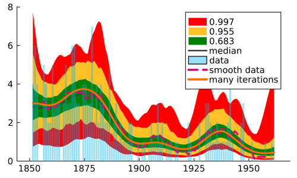

Advanced Tutorial
You can also download this tutorial as a Jupyter notebook and a plain Julia source file.
Introduction
In this tutorial, we will fit the coal mining disaster dataset with a Gaussian process modulated Poisson process.
Prepare the environment
We start by importing:
- MGVI for the posterior fit
Distributions.jlandFFTW.jlto define the statistical modelOptim.jlto passOptim.Optionsto MGVI and to find Maximum a posteriori fit that we will use for comparisonStatsBase.jlfor histogram construction from the data and also for error bands visualizationPlots.jlfor visualization
using MGVI
using FillArrays
using DelimitedFiles
using LinearAlgebra
using Random
using StatsBase
using Distributions
using Optim
using ForwardDiffPullbacks
using Plots
using Plots.PlotMeasures
Plots.default(legendfontsize=10, tickfontsize=10, grid=false, dpi=120, size=(500, 300))
using FFTW
import ForwardDiff, Zygote
using AutoDiffOperators
using LinearSolve: KrylovJL_CG
context = MGVIContext(ADSelector(Zygote))MGVIContext{HeterogeneousComputing.GenContext{Float64, HeterogeneousComputing.CPUnit, Random.TaskLocalRNG}, ADTypes.AutoZygote}(HeterogeneousComputing.GenContext{Float64, HeterogeneousComputing.CPUnit, Random.TaskLocalRNG}(HeterogeneousComputing.CPUnit(), Random.TaskLocalRNG()), ADTypes.AutoZygote())Random.seed!(84612);Load data
The dataset, which is included with this repository, contains intervals in days between disasters occuring at British coal mines between March 1851 and March 1962. We build a model by splitting the entire time range into intervals of 365 days.
function read_coal_mining_data(filepath, binsize)
init_year = empty
data = empty
open(filepath) do io
raw = readline(io)
while ! occursin("init_date", raw)
raw = readline(io)
end
init_year = parse(Float64, split(split(strip(raw[2:end]), "\t")[2], "-")[1])
data = readdlm(io, '\t', Int, '\n', comments=true)[:]
end
dates_fract_years = init_year .+ cumsum(data)/365
left_edge = dates_fract_years[1]
num_bins = ((dates_fract_years[end] - left_edge) ÷ binsize)
right_edge = left_edge + binsize*num_bins
fit(Histogram, dates_fract_years, left_edge:binsize:right_edge).weights
end
coal_mine_disaster_data = read_coal_mining_data(joinpath(@__DIR__, "coal_mining_data.tsv"), 1);Global parameters and the grid
Now we define several model properties:
DATA_DIMis the shape of the datasetDATA_XLIMspecifies the time range of the dataGP_GRAIN_FACTORdetermines the numbers of finer bins which a data bin is split into. This is useful when there are several datasets defined on different grids.GP_PADDINGadds empty paddings to the dataset. We use a Fourier transform to sample from the Gaussian process with a finite correlation length.GP_PADDINGhelps us to ensure that periodic boundary conditions imposed by a Fourier transform won't affect the data region.
DATA_DIM = size(coal_mine_disaster_data, 1);
data = coal_mine_disaster_data;
DATA_XLIM = [1851., 1962.];
GP_GRAIN_FACTOR = 3;
GP_PADDING = 80;function produce_bins()
data_binsize = (DATA_XLIM[2] - DATA_XLIM[1])/DATA_DIM
gp_binsize = data_binsize/GP_GRAIN_FACTOR
gp_dim = Integer(((DATA_XLIM[2] - DATA_XLIM[1]) + 2*GP_PADDING) ÷ gp_binsize)
gp_left_bin_offset = gp_right_bin_offset = (gp_dim - DATA_DIM) ÷ 2
if (2*gp_left_bin_offset + DATA_DIM*GP_GRAIN_FACTOR) % 2 == 1
gp_left_bin_offset += 1
end
gp_left_xlim = DATA_XLIM[1] - gp_left_bin_offset*gp_binsize
gp_right_xlim = DATA_XLIM[2] + gp_right_bin_offset*gp_binsize
gp_left_xs = collect(gp_left_xlim + gp_binsize/2:gp_binsize:DATA_XLIM[1])
gp_right_xs = collect(DATA_XLIM[2] + gp_binsize/2:gp_binsize:gp_right_xlim)
gp_data_xs = collect(DATA_XLIM[1] + gp_binsize/2:gp_binsize:DATA_XLIM[2])
gp_xs = [gp_left_xs; gp_data_xs; gp_right_xs]
data_idxs = collect(gp_left_bin_offset+1:GP_GRAIN_FACTOR:gp_left_bin_offset+DATA_DIM*GP_GRAIN_FACTOR)
gp_xs, gp_binsize, data_idxs
end;Based on the defined model properties, we generate the grid. GP grid is the fine-grained grid with offsets added to the data range.
_GP_XSrepresent bin centers of such a fine-grained grid_GP_BINSIZEis the width of the bin (that is 1/GP_GRAIN_FACTORof data bin size)_DATA_IDXS- integer indices of the left edges of the data bins
_GP_XS, _GP_BINSIZE, _DATA_IDXS = produce_bins();
_GP_DIM = length(_GP_XS);
_GP_HARMONIC_DIST = 1/_GP_DIM/_GP_BINSIZE;Model parameters
The Gaussian process in this tutorial is modeled in the Fourier space with zero mean and two hyperparameters defining properties of its kernel. To sample from this Gaussian process, we also need a parameter per bin that will represent the particular realization of the GP in the bin.
function assemble_paridx(;kwargs...)
pos = 0
res = []
for (k, v) in kwargs
new_start, new_stop = v.start+pos, v.stop+pos
push!(res, (k, (v.start+pos):(v.stop+pos)))
pos = new_stop
end
(;res...)
end;MGVI is an iterative procedure, so we will need to introduce an initial guess for the state of the model. We create a vector with size equal to the count of all parameters' starting_point and a NamedTuple PARDIX that assigns names to the sub-regions in this vector. In the correct case:
gp_hyperis two hyperparameters of the Gaussian process stored in the first two cells of the parameter vectorgp_latent_GP_DIMare parameters used to define the particular realization of the gaussian process, stored at indices between3to2 + _GP_DIM.
Function assemble_paridx is responsible for constructing such a NamedTuple from the parameter specification.
PARIDX = assemble_paridx(gp_hyper=1:2, gp_latent=1:_GP_DIM);
starting_point = randn(last(PARIDX).stop);Model implementation
function map_idx(idx::Real, idx_range::AbstractUnitRange{<:Integer})
i = idx - minimum(idx_range)
n = length(eachindex(idx_range))
n_2 = n >> 1
ifelse(i <= n_2, i, i - n)
end
function dist_k(idx::CartesianIndex, ax::NTuple{N,<:AbstractUnitRange{<:Integer}}, harmonic_distances::NTuple{N,<:Real}) where N
mapped_idx = map(map_idx, Tuple(idx), ax)
norm(map(*, mapped_idx, harmonic_distances))
end
function dist_array(dims::NTuple{N,<:Real}, harmonic_distances::NTuple{N,<:Real}) where N
cart_idxs = CartesianIndices(map(Base.OneTo, dims))
dist_k.(cart_idxs, Ref(axes(cart_idxs)), Ref(harmonic_distances))
end;A Gaussian process's covariance in the Fourier space is represented with a diagonal matrix. Values on the diagonal follow a squared exponential function with parameters depending on priors. A kernel that is diagonal and mirrored around the center represents a periodic and translationally invariant function in the coordinate space. This property restricts covariance to have a finite correlation length in the coordinate space.
The kernel in the Fourier space is defined on the domain of wave numbers k. We model the mirror-symmetrical kernel by imposing the mirror symmetry on the vector of the wave numbers. (See map_idx for the symmetry implementation)
k = dist_array((_GP_DIM,), (_GP_HARMONIC_DIST,));MGVI assumes that all priors are distributed as standard normals N(0, 1); thus, to modify the shapes of the priors, we explicitly rescale them at the model implementation phase.
We also exponentiate each prior before using it to tune the squared exponential shape. In doing so, we ensure only positive values for the kernel's hyperparameters.
Actually, for the sake of numeric stability we model already square root of the covariance. This can be traced by missing sqrt in the next level, where we sample from the Gaussian process.
function amplitude_spectrum(d::Real, ampl::Real, corrlen::Real)
ampl * sqrt(2 * π * corrlen) * exp( -π^2 * d^2 * corrlen^2)
end;
function sqrt_kernel(p)
kernel_A_c, kernel_l_c = p[PARIDX.gp_hyper]
kernel_A = 2*exp(kernel_A_c*0.9)*GP_GRAIN_FACTOR
kernel_l = 12*exp(kernel_l_c/15)/(GP_GRAIN_FACTOR^0.3)
amplitude_spectrum.(k, kernel_A, kernel_l)
end;As a Fourier transform we choose the Discrete Hartley Transform, which ensures that Fourier coefficients of the real valued function remain real valued.
ht = FFTW.plan_r2r(zeros(_GP_DIM), FFTW.DHT);Before we proceed, let's have a brief look at the kernel's shape. Below we plot the kernel in the coordinate space K(r) = K(x2 - x1) as a function of time in years between two points. As we go further along the x-axis, the time interval will increase, and the covariance will decrease.
function plot_kernel_model(p, width; plot_args=(;))
xs = collect(1:Int(floor(width/_GP_BINSIZE)))
plot!(xs .* _GP_BINSIZE, (ht * (sqrt_kernel(p) .^ 2))[xs] .* _GP_HARMONIC_DIST, label=nothing, linewidth=2.5; plot_args...)
end
plot()
plot_kernel_model(starting_point, 20)
savefig("advtut-plot1.pdf")To make it even more visual, we also plot the structure of the covariance matrix as a heatmap. We see that the finite correlation length shows up as a band around the diagonal. We also see small artifacts in the antidiagonal corners. These come from the assumption that the kernel is periodic.
function plot_kernel_matrix(p)
xkernel = ht * (sqrt_kernel(p) .^ 2) .* _GP_HARMONIC_DIST
res = reduce(hcat, [circshift(xkernel, i) for i in 0:(_GP_DIM-1)])'
heatmap!(_GP_XS, _GP_XS, res; yflip=true, xmirror=true, tick_direction=:out, top_margin=20px, right_margin=30px)
end
plot()
plot_kernel_matrix(starting_point)
savefig("advtut-plot2.png")"/home/runner/work/MGVI.jl/MGVI.jl/docs/build/advtut-plot2.png"{kind=link}
After we defined the square root of the kernel function (sqrt_kernel), we just follow the regular procedure of sampling from the normal distribution. Since the covariance matrix in the Fourier space is diagonal, Gaussian variables in each bin are independent of each other. Thus, sampling ends up rescaling the gp_latent part of the prior vector responsible for the Gaussian process state.
After we produced a sample of Gaussian random values following the kernel model, we apply a Fourier transform to return back to the coordinate space.
function gp_sample(p)
flat_gp = sqrt_kernel(p) .* p[PARIDX.gp_latent]
(ht * flat_gp) .* _GP_HARMONIC_DIST
end;Together with the implementation of gp_sample we also need to define its version of the Duals. This will allow our application of the Hartley transform to be differentiatiable.
function gp_sample(dp::Vector{ForwardDiff.Dual{T, V, N}}) where {T,V,N}
flat_gp_duals = sqrt_kernel(dp) .* dp[PARIDX.gp_latent]
val_res = ht*ForwardDiff.value.(flat_gp_duals) .* _GP_HARMONIC_DIST
psize = size(ForwardDiff.partials(flat_gp_duals[1]), 1)
ps = x -> ForwardDiff.partials.(flat_gp_duals, x)
val_ps = map((x -> ht*ps(x) .* _GP_HARMONIC_DIST), 1:psize)
ForwardDiff.Dual{T}.(val_res, val_ps...)
end;Gaussian process realization is meant to serve as a Poisson rate of the Poisson process. Since the Gaussian process is not restricted to positive values, we exponentiate its values to forcefully make the function positive.
function poisson_gp_link(fs)
exp.(fs)
end;Now when we have a function representing the Poisson rate density, we have to integrate it over each data bin to define the Poisson rate in these bins. Function agg_lambdas does precisely that. When GP_GRAIN_FACTOR = 1, this function just multiplies the value of the Gaussian process in the bin by the _GP_BINSIZE. When we have more GP bins per data bin (GP_GRAIN_FACTOR > 1), then we apply rectangular quadrature to integrate over the bin.
function _forward_agg(data, idxs, steps_forward)
[sum(data[i:i+steps_forward-1]) for i in idxs]
end;
function agg_lambdas(lambdas)
gps = _forward_agg(lambdas, _DATA_IDXS, GP_GRAIN_FACTOR) .* _GP_BINSIZE
xs = _GP_XS[_DATA_IDXS .+ (GP_GRAIN_FACTOR ÷ 2)]
xs, gps
end;Finally, we define the model by using the building blocks defined above:
gp_samplesample from the Gaussian process with definedsqrt_kernelcovariancepoisson_gp_linkensures Gaussian process is positiveagg_lambdasintegrates Gaussian process over each data bin to turn it into a Poisson rate for each binmodelmaps parameters into the product of the Poisson distribution's counting events in each bin.
function model(params)
fs = gp_sample(params)
fine_lambdas = poisson_gp_link(fs)
_, lambdas = agg_lambdas(fine_lambdas)
product_distribution(fwddiff(Poisson).(lambdas))
end;Visualization utilities
function agg_full_lambdas(lambdas)
left_idxs = 1:GP_GRAIN_FACTOR:(_DATA_IDXS[1]-GP_GRAIN_FACTOR)
left_gp = _forward_agg(lambdas, left_idxs, GP_GRAIN_FACTOR) .* _GP_BINSIZE
left_xs = _GP_XS[left_idxs .+ (GP_GRAIN_FACTOR ÷ 2)]
right_idxs = (_DATA_IDXS[end]+1):GP_GRAIN_FACTOR:(size(lambdas, 1) - GP_GRAIN_FACTOR)
right_gp = _forward_agg(lambdas, right_idxs, GP_GRAIN_FACTOR) .* _GP_BINSIZE
right_xs = _GP_XS[right_idxs .+ (GP_GRAIN_FACTOR ÷ 2)]
middle_xs, middle_gp = agg_lambdas(lambdas)
full_xs = [left_xs; middle_xs; right_xs]
full_gp = [left_gp; middle_gp; right_gp]
full_xs, full_gp
end;
function _mean(p; full=false)
agg_func = if (!full) agg_lambdas else agg_full_lambdas end
xs, gps = agg_func(poisson_gp_link(gp_sample(p)))
xs, gps
end;
function plot_mean(p, label="mean"; plot_args=(;), full=false)
plot!(_mean(p; full=full)...; label=label, linewidth=3, plot_args...)
end;
function plot_prior_samples(num_samples; mean_plot_args=(;))
for _ in 1:num_samples
p = randn(last(PARIDX).stop)
plot_mean(p, nothing; plot_args=mean_plot_args)
end
end;
function plot_kernel_prior_samples(num_samples, width)
for _ in 1:num_samples
p = randn(last(PARIDX).stop)
plot_kernel_model(p, width)
end
plot!()
end;
function plot_data(; scatter_args=(;), smooth_args=(;))
bar!(_GP_XS[_DATA_IDXS .+ (GP_GRAIN_FACTOR ÷ 2)], data, color=:deepskyblue2, la=0, markersize=2., markerstrokewidth=0, alpha=0.4, label="data"; scatter_args...)
smooth_step = 4
smooth_xs = _GP_XS[_DATA_IDXS .+ (GP_GRAIN_FACTOR ÷ 2)][(smooth_step+1):(end-smooth_step)]
smooth_data = [sum(data[i-smooth_step:i+smooth_step])/(2*smooth_step+1) for i in (smooth_step+1):(size(data, 1)-smooth_step)]
plot!(smooth_xs, smooth_data, color=:deeppink3, linewidth=3, linealpha=1, ls=:dash, label="smooth data"; smooth_args...)
end;
function plot_mgvi_samples(samples)
for sample in eachcol(samples)
if any(isnan.(sample))
print("nan found in samples", "\n")
continue
end
plot!(_mean(Vector(sample))..., linealpha=0.5, linewidth=2, label=nothing)
end
plot!()
end;
function plot_kernel_mgvi_samples(samples, width)
for sample in eachcol(samples)
if any(isnan.(sample))
print("nan found in samples", "\n")
continue
end
plot_kernel_model(sample, width; plot_args=(linealpha=0.5, linewidth=2, label=nothing))
end
plot!()
end;
function produce_posterior_samples(p, num_residuals)
batch_size = 10
if num_residuals <= 2*batch_size
batch_size = num_residuals ÷ 2
end
est_res_sampler = MGVI.ResidualSampler(
model, p, KrylovJL_CG((atol=1E-2,)), context
)
batches = []
for _ in 1:(num_residuals ÷ batch_size ÷ 2)
batch_residual_samples = MGVI.sample_residuals(est_res_sampler, batch_size)
push!(batches, p .+ batch_residual_samples)
push!(batches, p .- batch_residual_samples)
end
reduce(hcat, batches)
end
function _extract_quantile(sorted_gp_realizations, p)
map(s -> quantile(s, p; sorted=true), eachrow(sorted_gp_realizations))
end;
function plot_posterior_bands(p, num_samples; full=false)
bands = [(0.997, :red), (0.955, :goldenrod1), (0.683, :green)]
samples = produce_posterior_samples(p, num_samples)
xs, first_gp = _mean(samples[1:end, 1]; full=full)
gp_realizations = reduce(hcat, [_mean(Vector(sample); full=full)[2] for sample in eachcol(samples[1:end, 2:end])]; init=first_gp)
for (i, one_x_sample) in enumerate(eachrow(gp_realizations))
gp_realizations[i, 1:end] .= sort(Vector(one_x_sample))
end
for (band, color) in bands
quant_l = _extract_quantile(gp_realizations, (1-band)/2)
quant_u = _extract_quantile(gp_realizations, (1+band)/2)
plot!(xs, quant_l; fillrange=quant_u, fillcolor=color, linealpha=0, label=band)
end
sample_median = _extract_quantile(gp_realizations, 0.5)
plot!(xs, sample_median; linewidth=2, linecolor=:grey25, label="median")
end;Visualization and fitting
We start by plotting the Gaussian process's dynamic range by sampling many possible realizations of it unconditionally on the data. We expect the set of lines to populate the regions where there are data.
plot()
plot_data(;scatter_args=(;alpha=0.7))
plot_prior_samples(200, mean_plot_args=(;alpha=0.5))
plot!(ylim=[0, 8])
savefig("advtut-plot3.png")"/home/runner/work/MGVI.jl/MGVI.jl/docs/build/advtut-plot3.png"{kind=link}
We also plot prior samples for the kernel in the coordinate space. The plot below shows that the kernel is flexible in the amplitude while the correlation length is quite strongly predefined:
plot()
plot_kernel_prior_samples(200, 20)
savefig("advtut-plot4.pdf")Now that we see that the Gaussian process is potentially able to fit the data, we plot the initial guess (starting_point) to see where we should start from. This plot shows:
- data points
- smoothed data with a moving average of 9 years
- Poisson rate for each bin
- MGVI samples around the mean. At the later stages they can be used to estimate MGVI's uncertainty
plot()
plot_data()
plot_mean(starting_point, "starting point"; plot_args=(;color=:darkorange2))
plot_mgvi_samples(produce_posterior_samples(starting_point, 6))
savefig("advtut-plot5.pdf")We also want to introduce the full plot that shows not only the data region, but includes the region with the padding we added with GP_PADDING. We will use this plot to make sure that periodic boundary conditions don't interfere with the data.
plot()
plot_data()
plot_mean(starting_point, "full gp"; full=true, plot_args=(;color=:pink))
plot_mean(starting_point, "starting point"; plot_args=(;color=:darkorange2))
savefig("advtut-plot6.pdf")Below we also plot the kernel and MGVI samples that represent the possible variation of the kernel shape around the mean:
plot()
plot_kernel_model(starting_point, 20; plot_args=(;label="kernel model"))
plot_kernel_mgvi_samples(produce_posterior_samples(starting_point, 6), 20)
savefig("advtut-plot7.pdf")Let's make a first iteration of the MGVI. For purposes of displaying the convergence curve, we limit the optimization to 1 step so that MGVI will coverge more slowly.
config = MGVIConfig(
linsolver = KrylovJL_CG((;itmax=10)),
optimizer = MGVI.NewtonCG(steps = 1)
)
result, center_point = mgvi_step(model, data, 3, starting_point, config, context);We again plot data and the Poisson rate. We again show the Gaussian process with padding. After one iteration the Poisson rate doesn't seem to get much closer to the data.
plot()
plot_data()
plot_mean(center_point, "first iteration"; plot_args=(;color=:darkorange2))
plot_mgvi_samples(result.samples)
savefig("advtut-plot8.pdf")plot()
plot_data()
plot_mean(center_point, "full gp"; full=true, plot_args=(;color=:pink))
plot_mean(center_point, "first iteration"; plot_args=(;color=:darkorange2))
savefig("advtut-plot9.pdf")Kernel and its MGVI samples changed significantly in comparison to the starting_point even after the first iteration:
plot()
plot_kernel_model(center_point, 20; plot_args=(;label="kernel model"))
plot_kernel_mgvi_samples(result.samples, 20)
savefig("advtut-plot10.pdf")In order to visualize convergence we prepare a few functions to compute, store and plot the average posterior likelihood of.
function compute_avg_likelihood(model, samples, data)
tot = 0
for sample in eachcol(samples)
tot += -MGVI.posterior_loglike(model, sample, data)
end
tot/size(samples, 2)
end;
function show_avg_likelihood(series)
scatter!(1:size(series, 1), series, label="-loglike")
end;Now we do 30 more iterations of the MGVI and store the average likelihood after each step. We feed the fitted result of the previous step as an input to the next iteration.
config = MGVIConfig(
linsolver = KrylovJL_CG((;atol=1E-2,verbose=false)),
optimizer = MGVI.NewtonCG()
)
avg_likelihood_series = [];
push!(avg_likelihood_series, compute_avg_likelihood(model, result.samples, data));
for i in 1:30
global result, center_point = mgvi_step(model, data, 3, center_point, config, context);
push!(avg_likelihood_series, compute_avg_likelihood(model, result.samples, data))
end;First, let's have a look at the convergence plots. We see that MGVI converged after 10 iterations while being limited to very poor Optim performance.
plot(yscale=:log)
show_avg_likelihood(avg_likelihood_series)
savefig("advtut-plot11.pdf")Below we plot the result of the fit. Together with the data and Poisson rate, we also plot MGVI residuals. These are samples from the Gaussian posterior, sampled with respect to the posterior's covariance structure. Thus MGVI residual samples are deviations from the MGVI fit and represent how confident we are about the prediction.
plot(ylim=[0,8])
plot_data()
plot_mgvi_samples(result.samples)
plot_mean(center_point, "many iterations"; plot_args=(;color=:darkorange2))
savefig("advtut-plot12.pdf")To present credibility intervals we also plot credibility bands. We sample 400 residual samples from MGVI and then plot quantiles for each data bin. This should give us a feeling of how compatible the MGVI fit is with the data.
plot(ylim=[0,8])
plot_posterior_bands(center_point, 400)
plot_data()
plot_mean(center_point, "many iterations"; plot_args=(;color=:darkorange2))
savefig("advtut-plot13.pdf") We also make sure boundary conditions do not interfere with the data. Here is the Gaussian process plot with the paddings included:
plot()
plot_data()
plot_mean(center_point; full=true, plot_args=(;color=:pink))
plot_mean(center_point, "many iterations"; plot_args=(;color=:darkorange2))
savefig("advtut-plot14.pdf")Let's have a look at the kernel again. We expect the variation of samples to become narrower:
plot()
plot_kernel_model(center_point, 20; plot_args=(;label="kernel model"))
plot_kernel_mgvi_samples(result.samples, 20)
savefig("advtut-plot15.pdf")Maximum a posteriori estimation
We build a MAP as a cross check of MGVI results. We simply optimize the posterior likelihood by using Optim without any particular tuning settings:
max_posterior = Optim.optimize(x -> -MGVI.posterior_loglike(model, x, data), starting_point, LBFGS(), Optim.Options(show_trace=false, g_tol=1E-6, iterations=30));We observe that the bump in the middle (around 1910) is caught by the MAP while it is less pronounced in the MGVI fit. MAP also has finer structure around 1875 and 1835.
plot()
plot_data()
plot_mean(center_point, "mgvi mean"; plot_args=(;color=:darkorange2))
plot_mean(Optim.minimizer(max_posterior), "map")
savefig("advtut-plot16.pdf")We also can see the difference at the left edge of the data region. While MGVI smoothed the data, the MAP predicted a consequent peak:
plot()
plot_data()
plot_mean(Optim.minimizer(max_posterior), "full gp"; full=true, plot_args=(;color=:darkorange2))
plot_mean(center_point, "mgvi full gp"; full=true)
savefig("advtut-plot17.pdf")This page was generated using Literate.jl.